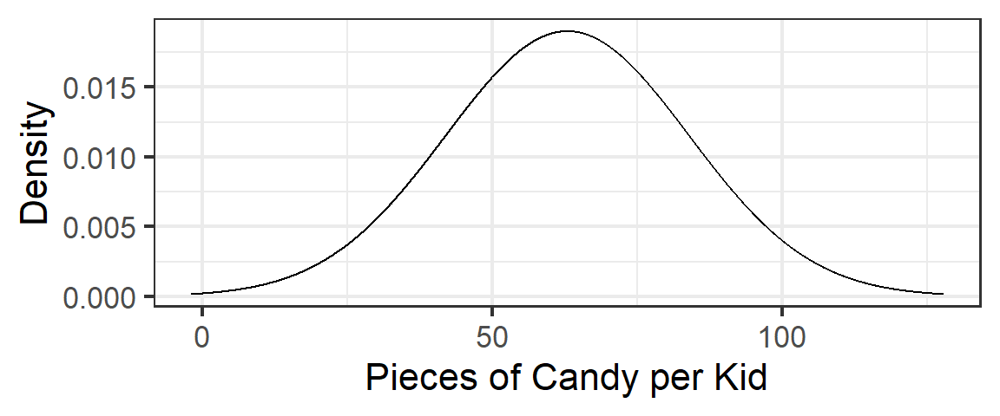
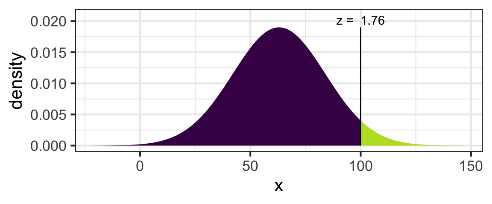
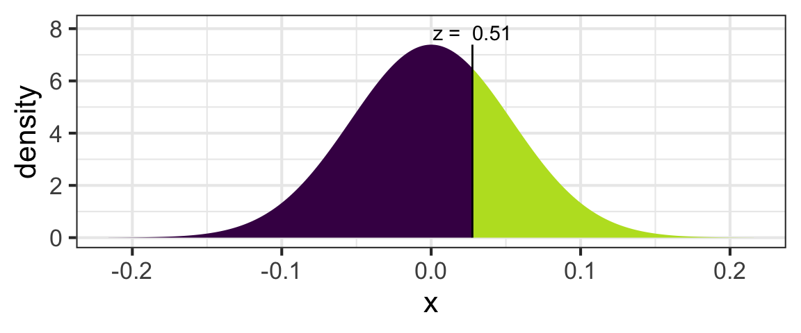
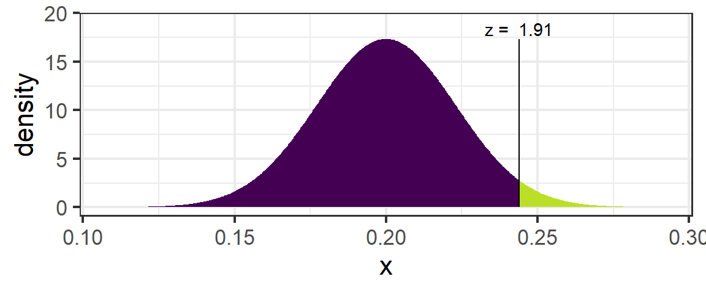
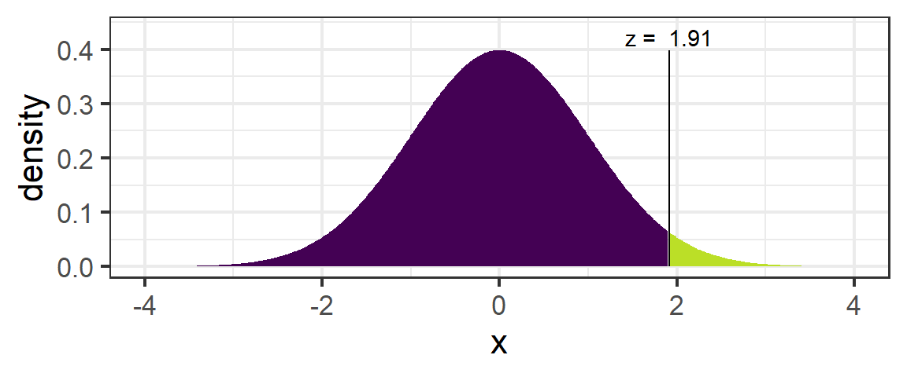

In the last tutorial, you learned to use normal distributions as an approximation to bootstrap sampling distributions, allowing you to use critical values \(z^*\) in the calculation of confidence intervals.
You will probably not be surprised to learn that randomization distributions, too, can be approximated well by normal distributions. We can take advantage of this fact to give us another way to compute p-values for randomization tests.
The material in this tutorial is also covered in the textbook: Lock5 Chapter 5.2.
This exercise uses data collected in 2011-2014 by Calvin College nursing students, led by Prof. Gail Zandee. They surveyed residents in several different neighborhoods to get information about their physical and mental health and lifestyles. The variables in the dataset zsurvey (available at http://sldr.netlify.com/data/ZandeeSurvey.csv) include:
neighborhood: Which neighborhood of Grand Rapids the person lives in: Heartsize or Creston.checkup: Respondents stating they have visited a doctor or clinic for a routine checkup within the past yearER4: Respondents stating they have visited the emergency room 4 or more times in the past yearnervous: Respondents stating they feel nervous all or most of the timeprescrip: Respondents stating they needed prescription medication during the past 12 months but did not get it because they could not afford ittransport: Respondents who say they have transportation to get needed health careWe learned before that the R function pnorm() calculates probabilities (areas under the curve) for normal distributions.
For example, let’s assume that the number of pieces of candy Grand Rapids kids get trick-or-treating on Halloween follows a normal distribution with mean 63 and standard deviation 21.
(Note: this is neither a test nor a CI; the distribution is not a bootstrap or randomization distribution. We are just claiming that the actual population distribution of candy-pieces-per-kid is Normal, as a simple first example…)
The distribution looks like this:

Given this scenario, what is the probability of a kid getting at least 100 pieces of candy? This probability corresponds to the area under the normal curve shown above, for x-values of 100 or greater:

The probablity of getting at least 100 pieces is 0.04.
To compute this value with pnorm(), we need to tell R:
lower.tail=TRUE) or greater than the value of interest (input lower.tail=FALSE)For example:
pnorm(100, mean=63, sd=21, lower.tail=FALSE)## [1] 0.03904269Your turn: what is the probability of getting less than 50 pieces of candy, if the distribution of pieces of candy per kid follows a normal distribution with mean 63 and standard deviation 21? (Verify that the correct answer is 0.268.)
pnorm(... , ..., ..., ...)pnorm( ..., mean=..., sd=..., lower.tail=...)pnorm(50, mean=63, sd=21, lower.tail=TRUE)If the proportion Halloween candy secretly thrown out by parents follows a normal distribution with mean 0.40 and a standard deviation of 0.11, what is the probability of a kid’s parents throwing away at least 90% of her candy? (Verify that the probability is only about 0.0000027 - what a relief!)
pnorm(... , ..., ..., ...)pnorm( ..., mean=..., sd=..., lower.tail=...)pnorm( 0.90, mean=0.40, sd=0.11, lower.tail=FALSE)Most randomization distributions are unimodal, symmetric, and bell-shaped, so they can be approximated well by normal distributions.
The mean of the relevant normal distribution will be the \(H_0\) value of the parameter of interest.
The standard deviation of the relevant normal distribution will be the standard error (SE) of the (randomization) sampling distribution.
For example, imagine we used the Zandee survey data to create a randomization distribution to test whether there is a difference, by neighborhood, in the proportion of people who have had a recent medical checkup.
The parameter of interest is \(p_{Heartside} - p_{Creston}\), the difference in proportion who’ve had a checkup, between neighborhoods. We can compute the corresponding sample statistic from the data.
tally(~checkup | neighborhood, data=zsurvey, format='prop')## neighborhood
## checkup Creston Heartside
## no 0.2981366 0.2704918
## yes 0.7018634 0.7295082s.stat <- diff(tally(~checkup | neighborhood, data=zsurvey, format='prop')[2,])
s.stat## Heartside
## 0.02764484We want to test:
\[H_0: p_{Heartside} - p_{Creston} = 0\] \[H_A: p_{Heartside} - p_{Creston} \neq 0\]
So our randomization distribution will be centered at the \(H_0\) parameter value, 0 (meaning there is no difference in proportion people who have had checkups between neighborhoods).
Imagine that the standard error of this randomization distribution was given to you: it is 0.055.
The figure below illustrates the randomization distribution, and the calculations related to finding the p-value of the test.

Now, use pnorm() (or xpnorm()) to compute the p-value and verify that the correct p-value is 0.061. Recall: the parameter of interest is the difference in proportion people who have had checkups; the sample statistic is 0.0276, the \(H_0\) value is 0, and the SE of the randomization distribution is 0.055.
2*pnorm(... , mean= ..., sd=..., lower.tail=...)2*pnorm(0.0276, mean=0, sd=0.054, lower.tail=FALSE)
# or:
2*(1 - pnorm(0.0276, mean = 0, sd = 0.054))Imagine that a nonprofit in West Michigan provides a free ride program to provide transport to medical appointments. They have limited resources, so they only provide this service in areas where the proportion of people without access to rides is 75% or more. Should they start service in the Zandee study area?
We want to test:
\[ H_0: p = 0.20\] \[ H_1: p > 0.20\] The alternate is one-sided this time because the nonprofit only cares if the proportion without rides definitely exceeds 20%; if it is 20% or less, it’s all the same to them.
The sample proportion people without transport in the study area is 0.244. The SE of the relevant randomization distribution is 0.023. What is the p-value of the test? (Verify that the correct answer is 0.028.)
pnorm(0.244, mean=0.20, sd=0.023, lower.tail=FALSE)Sometimes we call the sample statistic used in a hypothesis test a “test statistic.”
In some cases (you’ll see why later in the course), it can be useful to standardize the test statistic. We compute a standardized test statistic according to:
\[\frac{(\text{sample statistic} - H_0\text{ value})}{SE}\]
You can think of the standardized test statistic as the z-score of the sample stat, when compared to the randomization distribution.
Remember, the z-score of one observed data point from a distribution is computed by subtracting the mean of the distribution, then dividing by the standard deviation of the distribution. Here, the sample stat is the data point; the distribution is the randomization distribution, which has mean = the \(H_0\) parameter value and standard deviation \(SE\).
We can get a p-value by comparing the standardized test statistic to the standard normal distribution, with mean 0 and standard deviation 1. We should get the same p-value that we would get by comparing the normal sample stat to the randomization distribution.
For example, for the transport question, we found the p-value using the information:
sd().)
To compute the p-value with pnorm():
pnorm(0.244, mean=0.20, sd=0.023, lower.tail=FALSE)## [1] 0.02787124Alternatively, we could find the standardized test statistic. Find the standardized test stat in this case:
(stat - H0)/SE(0.244 - 0.20)/0.023Now, find the p-value by comparing the standardized test statistic to a normal distribution with mean 0 and sd 1. We should again get a p-value of 0.028.

How would you compute this value using pnorm()?
pnorm(..., mean = ..., sd = ..., lower.tail = ...)pnorm(..., mean = 0, sd = 1, lower.tail = ...)pnorm(1.913, mean = 0, sd = 1, lower.tail = ...)pnorm(1.913, mean = 0, sd = 1, lower.tail = FALSE)Look back and verify: we got the same solution (p-value) by both methods!
Try another example. Verify that, for the other case study we tried, the standardized test statistic is 0.511 and the p-value is 0.609. Helpful information (from before) is repeated below.
std_stat <- (stat - H0) / SE
2 * pnorm(..., mean = ..., sd = ..., lower.tail = ...)std_stat <- (0.0276 - 0) / 0.054
2 * pnorm(..., mean = ..., sd = ..., lower.tail = ...)std_stat <- (0.0276 - 0) / 0.054
std_stat
2 * pnorm(std_stat, mean = ..., sd = ..., lower.tail = ...)std_stat <- (0.0276 - 0) / 0.054
std_stat
2 * pnorm(std_stat, mean = 0, sd = 1, lower.tail = FALSE)In the last tutorial, you learned clever ways to use normal distributions and z-scores to help you compute confidence intervals for any confidence level, given the center and SE of a bootstrap distribution.
This time, you learned clever ways to use normal distributions to compute p-values for hypothesis tests, given the hypotheses being tested and the SE of the appropriate randomization distribution.
As hinted before: these skills will come in even more handy once we have some shortcut ways of estimating the SE (for a CI or a test) from the dataset itself, without doing any resampling.
For now: pause to congratulate yourself on these two new skills!